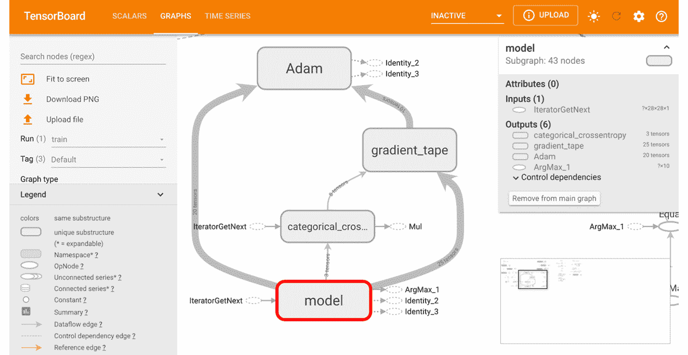
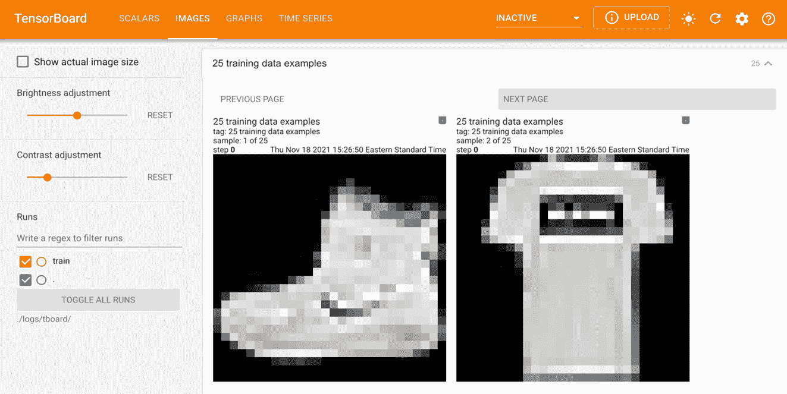
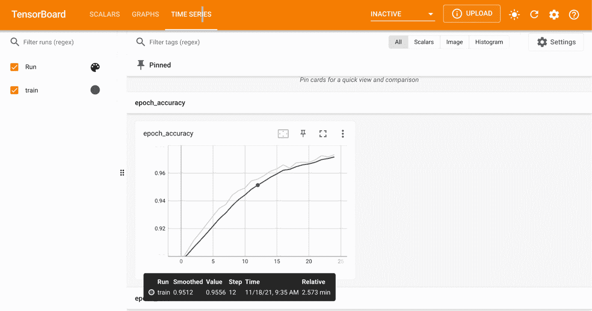
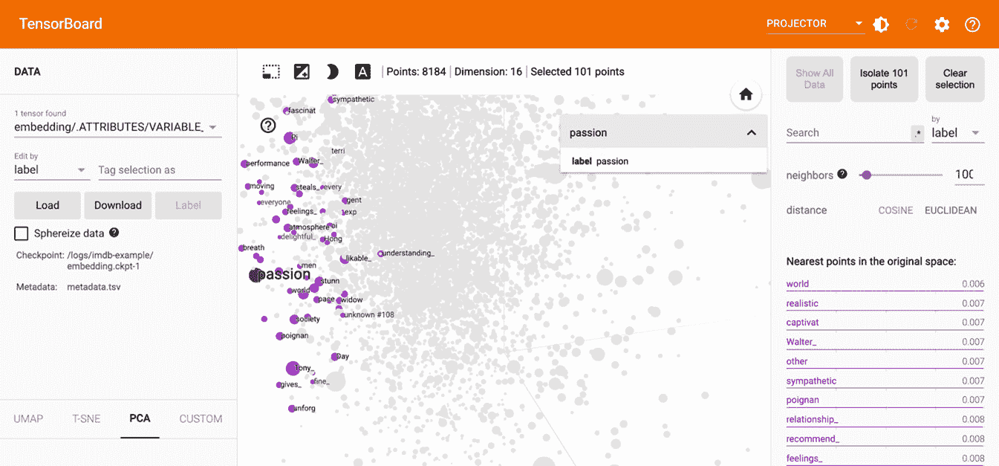
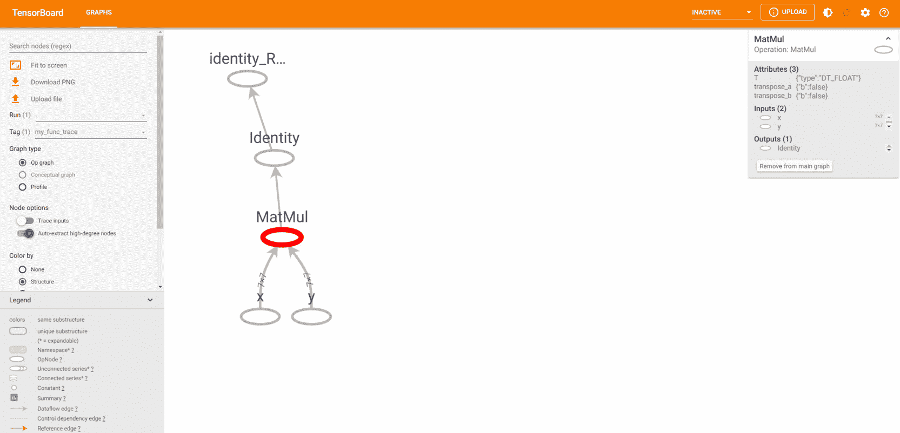
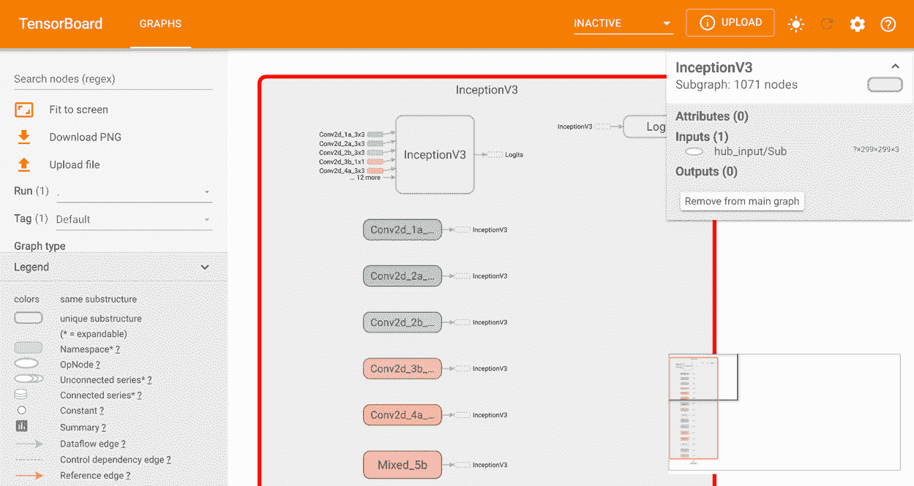
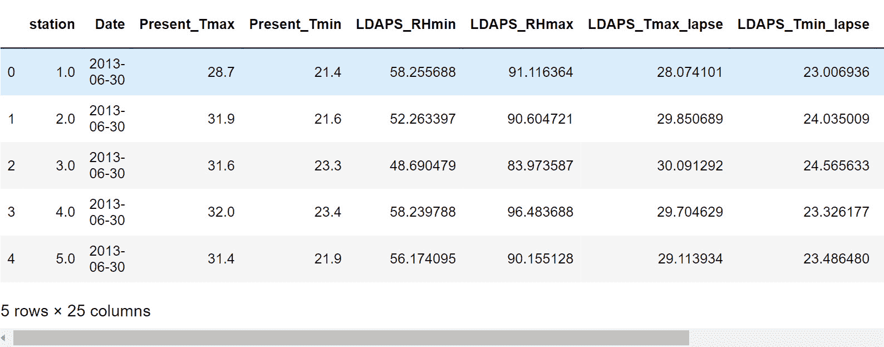
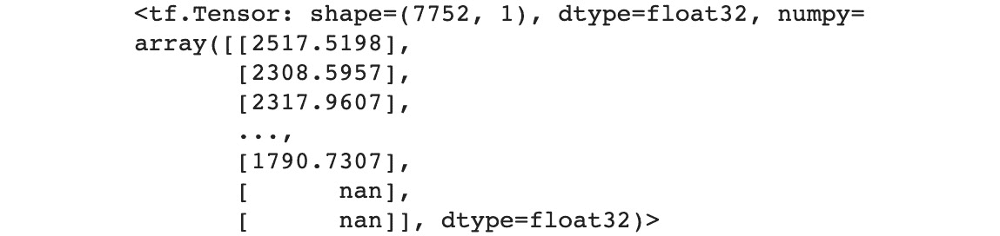

概观
TensorFlow为开发数据科学和机器学习应用程序时创建高效的工作流提供了许多资源。在本章中，您将学习如何使用TensorBoard来可视化TensorFlow图形和操作，如何使用TensorFlow Hub来访问用户社区(预训练模型的重要来源)，以及如何使用Google Colab，这是一个与他人一起开发代码的协作环境。您将使用这些工具通过最大限度地利用计算资源、从预先训练的模型中转移知识以及可视化模型构建过程的所有方面来加速开发。
简介
在前一章中，您学习了如何加载和处理各种数据类型，以便在TensorFlow建模中使用它们。这包括来自CSV文件、图像数据、文本数据和音频文件的表格数据。到本章结束时，您已经能够处理所有这些数据类型，并从中生成可以输入模型训练的数值张量。
在本章中，您将了解TensorFlow资源，这些资源将帮助您建立模型，并帮助您创建高性能的机器学习算法。您将探索实践者可以用来帮助他们开发工作流的实用资源，包括TensorBoard、TensorFlow Hub和Google Colab。TensorBoard是一个交互式平台，提供TensorFlow开发过程中产生的计算图形和数据的可视化表示。该平台解决了机器学习中常见的各种数据类型的可视化问题。visualization toolkit可以在建模过程中绘制模型评估指标，显示图像，播放音频数据，并执行许多其他需要编写自定义函数的任务。TensorBoard提供了简单的日志书写功能，这些功能随后会在浏览器窗口中显示出来。
TensorFlow Hub是一个预训练机器学习模型的开源库，带有一个代码库，所有人都可以使用并修改自己的应用程序。模型可以通过专用的库直接导入代码，并且可以在https://tfhub.dev/的查看。TensorFlow Hub允许用户使用由该领域专家创建的最先进的模型，并可以大幅减少将预训练模型作为用户模型一部分的模型的训练时间。
例如，该平台包含ResNet-50模型，这是一个50层的人工神经网络 ( 安)在ILSVRC 2015分类任务中获得了第一名，这是一个将图像分类为1000个不同类别的比赛。该网络具有超过2300万个可训练参数，并且在超过1400万个图像上进行训练。在现成的笔记本电脑上从头开始训练这个模型，以达到接近TensorFlow Hub上预训练模型的精度，需要几天时间。正是由于这个原因，利用TensorFlow Hub模型的能力可以加速开发。
在本章中，您将了解的最后一个资源是Google Colab，这是一个在线开发环境，用于在Google服务器上执行Python代码和创建机器学习算法。该环境甚至可以访问包含图形处理单元(GPU)和张量处理单元 ( TPUs )的硬件，这些硬件可以免费加速模型训练。谷歌可乐实验室在https://colab.research.google.com/有售。
Google Colab解决了为创建可以与其他人共享的机器学习模型而设置开发环境的问题。例如，多个机器学习实践者可以开发同一个模型，并在一个硬件实例上训练该模型，而不是必须用他们自己的资源运行该实例。顾名思义，该平台促进了机器学习从业者之间的合作。
现在，让我们来探索TensorBoard，这是一种帮助从业者理解和调试他们的机器学习工作流程的资源。
张量板
TensorBoard是一个可视化工具包，用于帮助机器学习实验。该平台具有仪表板功能，用于可视化数据科学或机器学习从业者可能会立即需要的许多常见数据类型，如标量值、图像批次和音频文件。虽然这种可视化可以用其他绘图库创建，如matplotlib或ggplot，TensorBoard在一个易于使用的环境中结合了许多可视化。此外，创建可视化所需的全部工作就是在构建、装配和评估步骤中记录轨迹。TensorBoard有助于完成以下任务:
- 可视化模型图以查看和理解模型的架构:
图3.1:tensor board中模型图和函数的可视化表示
- 查看变量的直方图和分布，并跟踪它们如何随时间变化。
- 显示图像、文本和音频数据。例如，下图显示了来自时装MNIST数据集(https://www.tensorflow.org/datasets/catalog/fashion_mnist):的图像
图3.2:在TensorBoard中查看图像
- 在模型训练期间绘制作为时期的函数的模型评估度量图:
图3.3:在TensorBoard中绘制模型评估指标
- 可视化嵌入向量的降维:
图3.4:在TensorBoard中可视化嵌入向量
TensorBoard从开发过程中写入的日志中创建可视化效果。为了创建日志来可视化图形，需要在开发代码中初始化一个文件写入器对象，提供日志的位置作为参数。文件编写器通常是在Jupyter笔记本或等效的开发环境开始时，在写入任何日志之前创建的。这可以通过以下方式完成:
logdir = 'logs/' writer = tf.summary.create_file_writer(logdir)
在前面的代码中，设置了用于写入日志的目录，如果该目录尚不存在，则在运行前面的代码后，将在工作目录中自动创建一个新目录。导出日志时，文件写入器对象将文件写入日志目录。要开始跟踪，必须执行以下代码:
tf.summary.trace_on(graph=True, profiler=True)
前面的命令打开跟踪，该跟踪记录从命令执行时开始出现的计算图。如果不打开跟踪，什么都不会被记录，因此，在TensorBoard中什么也看不到。一旦计算图形的跟踪完成，就可以使用文件写入器对象将日志写入日志目录，如下所示:
with writer.as_default():
tf.summary.trace_export(name="my_func_trace",\
step=0, profiler_outdir=logdir)
在编写日志时，您需要使用以下参数:
name:该参数描述摘要的名称。step:该参数描述了汇总的单调步长值，如果对象不随时间变化，可以设置为0。profiler_outdir:该参数描述日志写入的位置，如果在定义文件写入器对象时没有提供，则该参数是必需的。
将日志写入目录后，可以通过命令行使用以下命令启动TensorBoard，从而将日志的目录作为logdir参数传入:
tensorboard --logdir=./logs
Jupyter笔记本的某些版本允许TensorBoard直接在笔记本内运行。但是，库依赖和冲突通常会阻止TensorBoard在笔记本环境中运行，在这种情况下，您可以从命令行在单独的进程中启动TensorBoard。在本书中，您将使用TensorFlow版和TensorBoard 2.1版，并且您将始终使用命令行来启动tensor board。
在第一个练习中，您将学习如何使用TensorBoard来可视化图形过程。您将创建一个函数来执行张量乘法，然后在TensorBoard中可视化计算图形。
练习3.01:使用张量板可视化矩阵乘法
在本练习中，您将执行7x7矩阵与随机值的矩阵乘法，并跟踪计算图和分析信息。接下来，您将使用TensorBoard查看计算图。这个练习将在Jupyter笔记本上进行。启动TensorBoard需要在命令行上运行命令，如最后一步所示。
请遵循以下步骤:
- 打开一个新的Jupyter笔记本，导入TensorFlow库，然后设置一个可复制性的种子。由于您正在生成随机值，如果每次运行代码时种子集都相同，那么设置种子将确保生成的值相同:
import tensorflow as tf tf.random.set_seed(42)
- 创建一个
file_writer对象，并设置存储日志的目录:logdir = 'logs/' writer = tf.summary.create_file_writer(logdir)
- 创建一个张量流函数将两个矩阵相乘:
@tf.function def my_matmult_func(x, y): result = tf.matmul(x, y) return result
- 创建两个形状为
7x7的张量形式的样本数据，随机变量:x = tf.random.uniform((7, 7)) y = tf.random.uniform((7, 7))
- 使用TensorFlow的
summary类:tf.summary.trace_on(graph=True, profiler=True)
打开图形跟踪 - 将在步骤3 中创建的函数应用于在步骤4 中创建的样本张量。接下来，将跟踪导出到
log目录，为图表设置name参数以供参考，并为profiler_outdir参数设置log目录。step参数表示汇总的单调步长值；如果被跟踪的值不同，该值应该是非零的，在这种情况下，可以用该参数指定的步长来可视化它们。对于静态对象，比如这里的图形轨迹，应该设置为零:z = my_matmult_func(x, y) with writer.as_default(): tf.summary.trace_export(name="my_func_trace",\ step=0,\ profiler_outdir=logdir)
- Finally, launch TensorBoard in the current working directory using the command line to view a visual representation of the graph. TensorBoard can be viewed in a web browser by visiting the URL that is provided after launching TensorBoard:
tensorboard --logdir=./logs
对于运行Windows的系统，在Anaconda提示符下运行以下命令:
tensorboard --logdir=logs
通过运行上述代码，您将能够看到以下模型图:

图3.5:张量板中矩阵乘法的可视化表示
在TensorBoard中，您可以查看张量将两个矩阵相乘以生成另一个矩阵的过程。通过选择各种元素，可以根据对象的类型查看计算图形中每个对象的信息。在这里，您创建了两个张量，名为x和y，由底部的节点表示。通过选择其中一个节点，您可以查看关于张量的属性，包括其数据类型(float)、其用户指定的名称(x或y)以及输出节点的名称(MatMul)。这些代表输入张量的节点然后被输入到代表张量乘法过程的另一个节点，在张量流函数之后标记为MatMul。选择该节点会显示函数的属性，包括输入参数、输入节点(x和y)和输出节点(Identity)。最后两个节点，标记为Identity和identity_RetVal，代表输出张量的创建。
在本练习中，您使用TensorBoard可视化了一个计算图形。您创建了一个简单的函数来将两个张量相乘，并通过绘制图形和记录结果来记录这个过程。记录完图表后，您可以通过启动TensorBoard并将工具指向日志的位置来可视化它。
在第一个活动中，您将练习使用TensorBoard来可视化更复杂的张量变换。事实上，任何张量过程和变换都可以在TensorBoard中可视化，上一个练习中演示的过程是创建和编写日志的良好指南。
活动3.01:使用张量板可视化张量变换
给你两个形状为5x5x5的张量。您需要创建张量流函数来执行张量变换并查看变换的可视化表示。
您将采取的步骤如下:
- 导入TensorFlow库并将种子设置为
42。 - 设置日志目录并初始化文件写入器对象以写入跟踪。
- 创建一个张量流函数将两个张量相乘，使用
ones_like函数将1的值添加到结果张量中的所有元素，以创建一个与矩阵乘法结果形状相同的张量。然后，对张量的每个值应用一个sigmoid函数。 - 创建两个形状为
5x5x5的张量。 - 打开图形跟踪。
- 将函数应用于两个张量，并将轨迹导出到日志目录。
- 在命令行中启动TensorBoard并在web浏览器中查看图形:

图3.6:张量板中张量变换的可视化表示
注意
此活动的解决方案可通过此链接找到。
然而，TensorBoard不仅用于可视化计算图形。图像、标量变量、直方图和分布都可以在TensorBoard中查看，方法是使用适当的TensorFlow summary方法将它们写入日志目录。例如，可以将图像写入日志，如下所示:
with file_writer.as_default():
tf.summary.image("Training data", training_images, step=0)
其输出将是一个添加到名为Training data的日志目录中的文件，该文件包含由文件写入器写入的图像。通过选择标签为IMAGES的选项卡，可以在TensorBoard中查看图像。
同样，标量变量可以写入日志，以便在TensorBoard中查看，如下所示:
with file_writer.as_default():
tf.summary.scalar('scalar variable', variable, step=0)
音频文件可以通过以下方式写入日志，以便在TensorBoard中播放:
with file_writer.as_default():
tf.summary.audio('audio file', data, sample_rate=44100, \
step=0)
可以通过如下方式输入数据来记录直方图:
with file_writer.as_default():
tf.summary.histogram('histogram', data, step=0)
在每个将数据写入日志的示例中，step参数被设置为零，因为这是一个必需的参数，并且不能为空。将参数设置为零表示该值是静态的，不随时间变化。每种数据类型在TensorBoard的不同选项卡中都是可见的。
在下一个练习中，您将向TensorBoard中写入图像，以便可以在平台中直接查看它们。有了TensorBoard，这变成了一个简单的过程，否则就需要编写自定义代码来查看图像。您可能希望可视化批次图像，以验证标签、检查扩增过程或验证总体图像。
练习3.02:使用TensorBoard可视化图像批次
在本练习中，您将使用TensorBoard查看图像批次。您将为图像创建一个文件写入器和一个数据生成器，然后将一批图像写入日志文件。最后，您将在TensorBoard中查看图像。
注意
你可以在这里的image_data文件夹中找到图片:https://packt.link/1ue46。
请遵循以下步骤:
- 导入TensorFlow库和
ImageDataGenerator类:import tensorflow as tf from tensorflow.keras.preprocessing.image import \ ImageDataGenerator
- 创建一个
file_writer对象，并设置存储日志的目录:logdir = 'logs/' writer = tf.summary.create_file_writer(logdir)
- 初始化一个
ImageDataGenerator对象:train_datagen = ImageDataGenerator(rescale = 1./255)
- Use the data generator's
flow_from_directorymethod to create a batch image loader:batch_size = 25 training_set = train_datagen.flow_from_directory\ ('image_data',\ target_size = (224, 224),\ batch_size = batch_size,\ class_mode = 'binary')注意
确保将路径(突出显示)更改为系统上目录的位置。如果您从存储数据集的同一个目录中运行Jupyter笔记本，您可以不做任何修改就运行前面的代码。
- 从第一批中取出图像，并使用文件写入器将它们写入日志:
with file_writer.as_default(): tf.summary.image("Training data", \ next(training_set)[0], \ max_outputs=batch_size, \ step=0) - Launch TensorBoard in the command line to view a visual representation of the graph. TensorBoard can be viewed in a web browser by visiting the URL that is provided after launching TensorBoard. The default URL provided is
http://localhost:6006/:tensorboard --logdir=./logs
对于运行Windows的系统，在Anaconda提示符下运行以下命令:
tensorboard --logdir=logs
目录中的图像将在TensorBoard中显示如下:

图3.7:在TensorBoard中查看一批图像
注意
您系统上的图像可能会有所不同。
TensorBoard中的结果是来自第一批的图像。你可以看到它们是船和飞机的图像。TensorBoard还为您提供了调整图像亮度和对比度的能力；但是，这只会影响TensorBoard中的图像，而不会影响底层图像数据。
在本练习中，您使用TensorBoard查看了来自图像数据生成器的一批图像。这是检验训练数据质量的一个极好的方法。可能没有必要验证每张图像的质量，但使用TensorBoard可以轻松查看样品批次。
本节介绍了TensorFlow提供的一个资源，用于帮助数据科学和机器学习从业者理解和可视化他们的数据和算法:TensorBoard。您已经使用该资源来可视化计算图形和图像批次。在下一节中，您将探索TensorFlow Hub，这是一个机器学习模块的存储库，可以轻松地访问和合并到自定义应用程序中。这些模型是由该领域的专家创建的，您将学习如何在自己的应用程序中访问它们。
TensorFlow集线器
TensorFlow Hub是机器学习模块的在线存储库。模块包含使用任何模型(例如，用于预测或迁移学习)所需的具有相关权重的资产，其中在训练一个模型中获得的知识用于解决不同但相关的问题。这些模块可以直接用于创建他们接受过培训的应用程序，也可以作为构建新应用程序的起点。该平台可通过以下网址访问:【https://tfhub.dev/。当您访问该网站时，您将看到以下页面:
图3.8: TensorFlow Hub主页
在这里，您可以浏览不同领域的模型。最受欢迎的领域包括图像、文本和视频；这些领域有许多模型:
图3.9:tensor flow Hub上可用的模型域
TensorFlow Hub上有许多以图像作为输入数据的模型。这些模型通常是为包括图像分类、分割、嵌入、生成、增强和风格转换在内的任务而创建的。为文本数据创建的模型通常用于文本嵌入，用于视频数据的模型用于视频分类。还有用于包括命令检测和音高提取的任务的音频数据模型。TensorFlow Hub不断更新最新的最先进模型，可用于各种应用。
选择一个模型将使您进入以下页面，该页面将告诉您有关该模型的信息，例如模型的大小、其体系结构、对其进行训练的数据集以及用于参考的URL:
图3.10:tensor flow Hub模型的页面
当引用您自己的应用程序的模型时，您将需要模型页面的URL来加载它。
通过利用tensorflow_hub库，可以在笔记本环境中从TensorFlow Hub访问模型。该库可以按如下方式导入:
import tensorflow_hub as hub
可以通过使用库的load函数并传入模型的引用URL来加载模型:
module = hub.load("https://tfhub.dev/google/imagenet"\
"/inception_resnet_v2/classification/4")
模型模块的资产，比如它的架构，可以通过访问signatures属性来查看。每个模型在signatures属性中可能有不同的键；然而，许多相关信息将包含在default键中:
model = module.signatures['default']
通过使用KerasLayer方法将整个模型视为单个Keras层，该模型也可直接用于训练:
layer = hub.KerasLayer("https://tfhub.dev/google/imagenet"\
"/inception_resnet_v2/classification/4")
使用模型作为你自己的应用程序的层的过程被称为迁移学习，这将在后面的章节中更深入地探讨。
在TensorFlow Hub中查看模型可以通过使用文件写入器将模型图写入日志来完成，如下所示:
from tensorflow.python.client import session
from tensorflow.python.summary import summary
from tensorflow.python.framework import ops
with session.Session(graph=ops.Graph()) as sess:
file_writer = summary.FileWriter(logdir)
file_writer.add_graph(model.graph)
在以下练习中，您将从TensorFlow Hub下载一个模型。载入模型后，您将使用TensorBoard查看模型的架构。
练习3.03:从TensorFlow Hub下载模型
在本练习中，您将从TensorFlow Hub下载一个模型，然后在TensorBoard中查看该模型的架构。将要下载的型号是InceptionV3型号。这个模型是在TensorFlow 1中创建的，因此需要一些额外的步骤来显示模型细节，因为我们使用的是TensorFlow 2。该模型包含两个部分:一个部分包含卷积层以从图像中提取特征，另一个部分包含完全连接的层。
不同的层将在TensorBoard中可见，因为它们已被原作者恰当地命名。
注意
可以在这里获取InceptionV3模型:https://tfhub . dev/Google/imagenet/inception _ v3/classification/5。
按照以下步骤完成本练习:
- Import the following libraries from TensorFlow:
import tensorflow as tf import tensorflow_hub as hub from tensorflow.python.client import session from tensorflow.python.summary import summary from tensorflow.python.framework import ops
需要TensorFlow和TensorFlow Hub库来导入和构建模型，需要TensorFlow库中的其他类来可视化使用TensorFlow 2在TensorFlow 1中创建的模型，这正是您在本书中使用的。
- 为要存储的日志创建一个变量:
logdir = 'logs/'
- 使用
tensorflow_hub库中的load方法加载一个模型模块，并传入模型的URL:module = hub.load('https://tfhub.dev/google/imagenet'\ '/inception_v3/classification/5') - 从模块的
signatures属性加载模型:model = module.signatures['default']
- 使用文件写入器将模型图形写入TensorBoard】
- Launch TensorBoard in the command line to view a visual representation of the graph. TensorBoard can be viewed in a web browser by visiting the URL that is provided after launching TensorBoard:
tensorboard --logdir=./logs
对于运行Windows的系统，在Anaconda提示符下运行以下命令:
tensorboard --logdir=logs
您应该会看到类似下图的内容:

图3.11:在TensorBoard中看到的InceptionV3模型的架构
TensorBoard的成果是InceptionV3模型的架构。在这里，您可以查看模型每一层的所有细节，包括输入、输出和激活功能。
在本练习中，您使用TensorFlow Hub库成功地将模型下载到了Jupyter笔记本环境中。一旦模型加载到环境中，您就可以使用TensorBoard可视化模型的架构。为了调试的目的，这是一种可视化模型架构的有用方法。
在本节中，您已经探索了如何使用TensorFlow Hub作为一种方式来利用机器学习领域专家创建的许多优秀模型。正如您将在后面的章节中发现的，这些模型可以用来解决与它们被开发的应用稍微不同的应用；这就是所谓的迁移学习。在下一节中，您将学习如何使用Google Colab，这是一个类似于Jupyter笔记本的环境，可用于在Google服务器上协作开发Python online应用程序。
谷歌Colab
Google Colab使用户能够在Google服务器上执行代码，它是专门为数据科学从业者设计的，用于在协作环境中为机器学习开发代码。该平台在https://colab.research.google.com/可用，并提供了一个直接在web浏览器中使用Python编程语言进行开发的机会，无需在本地机器上执行代码。该环境预装了最新的数据科学和机器学习库，为使用Jupyter笔记本电脑设置开发环境提供了一种便捷的替代方法。此外，该平台有一个免费层，包括对GPU和TPU的访问，不需要配置，合作者之间共享笔记本电脑很容易。
Google Colab的开发体验与Jupyter笔记本非常相似，使用Google Colab比使用Jupyter笔记本有一些优势和劣势。
Google Colab的优势
以下是使用Google Colab的一些主要优势:
- 协作:许多用户可以访问同一个笔记本，一起协作工作。
- 托管环境 : Google Colab运行在Google服务器上，如果本地计算资源有限，这会很有帮助。不需要设置开发环境，因为许多包都是预安装的。
- 易访问性 : Google Colab直接保存到Google Drive，提供无缝集成。由于笔记本电脑保存在云中，因此只要能访问Google Drive，就可以使用它们。
- 加速训练时间 : GPU和TPU服务器可用，可以为训练机器学习模型提供加速训练时间，尤其是有很多隐含层的ann。
- 交互式窗口小部件:窗口小部件可以添加到笔记本中，提供一种以交互方式轻松改变输入参数和变量的方法。
Google Colab的缺点
以下是使用Google Colab的一些缺点:
- 受限运行时:tensor flow在Google Colab上只有两个版本，1。x和2。x，而且它们是更新的，所以特定的函数可能会随着时间的推移而改变，从而导致代码崩溃。此外，TensorFlow的版本可能无法与其他包很好地交互。
- 互联网依赖:由于Python代码是在Google服务器上执行的，Google Colab只能通过互联网连接访问。
- 无自动保存:笔记本必须保存一致，与Jupyter笔记本自动保存不同。
- 会话超时:虚拟机上运行的笔记本电脑最长寿命为12小时，闲置时间过长的环境将会断开连接。
geoplotlib由于与预装库不兼容，可能无法显示交互式元素。
Google Colab的开发
由于Google Colab使用的是笔记本，所以开发环境和Jupyter笔记本非常相似。事实上，IPython笔记本可以加载到Google Colab中。它们可以通过直接上传、Google Drive或GitHub存储库加载。此外，该平台还提供了示例笔记本电脑供您开始使用。当您导航到平台https://colab.research.google.com/时，您将看到以下屏幕，其中提供了要打开的笔记本或选择新笔记本开始开发的选项:
图3.12:Google Colab的主页
如果选择了新的笔记本，您会看到下面的屏幕，这可能会让人想起在Jupyter笔记本中进行开发，并且具有许多相同的功能。您可以用完全相同的方式创建代码或文本片段，许多从业者发现从Jupyter的过渡是无缝的:
图3.13:Google Colab中的一个空白笔记本
在下一个练习中，您将使用Google Colab来导入和操作数据。与Jupyter笔记本电脑相比，在Google Colab中工作的一个主要区别是，在Google Colab中工作，您是在远程服务器上进行开发。这意味着任何用于分析或训练模型的数据要么必须加载到Google Drive上，要么可以直接在线获得。在下面的练习中，您将为这本书直接从GitHub存储库中导入CSV数据。
练习3.04:使用Google Colab可视化数据
在本练习中，您将从GitHub存储库中加载一个数据集，该数据集包含韩国首尔第二天最高和最低气温预测的偏差校正数据。
注意
你可以在这里找到Bias_correction_ucl.csv文件:https://packt.link/8kP3j。
要执行该练习，您必须导航至https://colab.research.google.com/并创建一个新的工作笔记本。您将需要连接到支持GPU的环境来加速张量流操作，如张量乘法。一旦数据被加载到开发环境中，您将会看到前五行。接下来，您将删除Date字段，因为矩阵乘法需要数值字段。然后，您将执行数据集与张量或均匀随机变量的张量乘法。
按照以下步骤完成本练习:
- Import TensorFlow and check the version of the library:
import tensorflow as tf print('TF version:', tf.__version__)您应该获得TensorFlow库的版本:
图3.14:Google Colab中TensorFlow版本的输出
- Navigate to the
Edittab, go toNotebook Settings, and then selectGPUfrom theHardware Accelerationdropdown. Verify that the GPU is enabled by displaying the GPU device name:tf.test.gpu_device_name()
您应该获得GPU设备的名称:
图3.15:GPU设备名称
- 导入
pandas库，直接从GitHub库加载数据集:import pandas as pd df = pd.read_csv('https://raw.githubusercontent.com'\ '/PacktWorkshops/The-TensorFlow-Workshop'\ '/master/Chapter03/Datasets'\ '/Bias_correction_ucl.csv') - View the first five rows of the dataset using the
headmethod:df.head()
您应该得到以下输出:
图3.16:数据帧的前五行的输出
- 删除
Date字段，因为您将执行矩阵乘法，这需要数值字段:df.drop('Date', axis=1, inplace=True) - 导入NumPy，将DataFrame转换为NumPy数组，然后创建均匀随机变量的TensorFlow张量。张量的第一个轴的值将等于数据集的字段数，第二个轴将等于
1:import numpy as np df = np.asarray(df).astype(np.float32) random_tensor = tf.random.normal((df.shape[1],1))
- Perform tensor multiplication on the dataset and the random tensor using TensorFlow's
matmulfunction and print the result:tf.matmul(df, random_tensor)
您应该得到如下输出:

图3.17:张量乘法的输出
执行乘法的结果是一个形状为7752x1的新张量。
在本练习中，您学习了如何使用Google Colab。您观察到Google Colab提供了一个构建机器学习模型的便利环境，并且预装了许多任何机器学习应用程序可能需要的库。您还可以看到使用了最新版本的库。不幸的是，TensorFlow的版本无法修改，因此在生产环境中使用Google Colab可能不是最合适的应用程序。然而，它非常适合开发环境。
在下面的活动中，您将进一步练习如何在开发环境中使用Google Colab。您将使用与Jupyter笔记本电脑相同的方式使用TensorFlow Hub。该活动将类似于练习2.04 、加载TensorFlow模型的文本数据中所实现的内容，其中文本数据通过使用预训练的单词嵌入模型进行处理。利用预训练模型将在后续章节中介绍，但本练习将展示利用TensorFlow Hub中的预训练模型有多简单。
活动3.02: Pe 根据TensorFlow Hub的预训练模型进行单词嵌入
在本活动中，您将练习在Google Colab环境中工作。您将从以下网址下载TensorFlow Hub的通用句子编码器:https://tfhub.dev/google/universal-sentence-encoder/4。一旦模型被加载到内存中，您将使用它来编码一些示例文本。
请遵循以下步骤:
- 导入TensorFlow和TensorFlow Hub，打印库的版本。
- 将模块的句柄设置为通用语句编码器的URL。
- 使用TensorFlow Hub
KerasLayer类创建一个Hub层，传递以下参数:module_handle、input_shape和dtype。 - 创建一个包含字符串
The TensorFlow Workshop的列表，用编码器进行编码。 - Apply
hub_layerto the text to embed the sentence as a vector.您的最终输出应该如下所示:

图3.18:活动3.02的预期产出
注意
此活动的解决方案可通过此链接找到。
本节介绍了Google Colab，这是一个用于在Google服务器上运行Python代码的在线开发环境。这可以让任何有互联网连接的从业者开始构建机器学习模型。此外，您可以浏览预训练模型的选择，开始使用本章中学习的另一个资源TensorFlow Hub为您自己的应用程序创建模型。Google Colab为从业者提供了一个零配置、最新的环境，甚至可以访问GPU和TPU以加快模型训练时间。
总结
在本章中，您使用了各种TensorFlow资源，包括TensorBoard、TensorFlow Hub和Google Colab。TensorBoard为用户提供了一种可视化计算模型图、指标和任何实验结果的方法。TensorFlow Hub允许用户使用该领域专家构建的预训练模型来加速他们的机器学习开发。Google Colab提供了一个在Google服务器上开发机器学习模型的协作环境。开发高性能机器学习模型是一个反复试验的过程，可视化该过程每一步的能力可以帮助从业者调试和改进他们的模型。此外，了解该领域的专家如何构建他们的模型，并能够利用网络中预先学习的权重，可以大大减少训练时间。所有这些资源都用于提供一个在高效工作流中开发和调试机器学习算法的环境。
在下一章中，您将开始在TensorFlow中创建自己的机器学习模型，从回归模型开始。回归模型旨在根据输入数据预测连续变量。您将通过利用Keras层来创建回归模型，这对于构建ann非常有用。